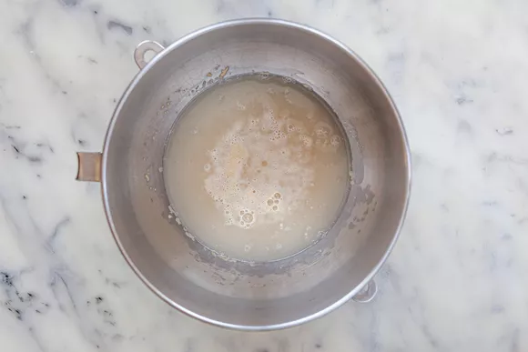
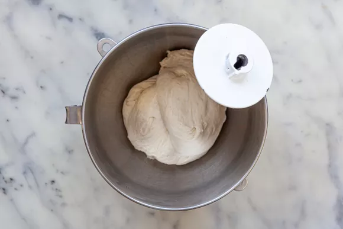
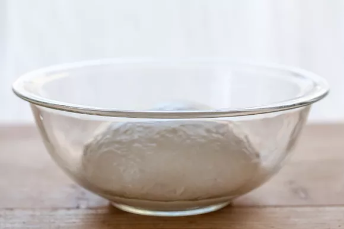
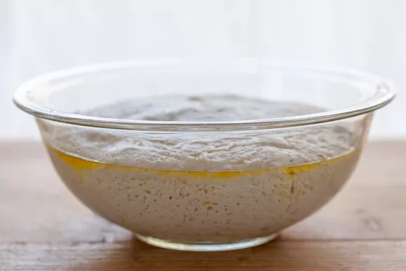
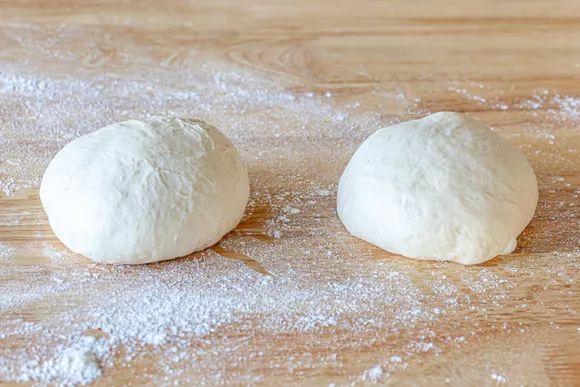
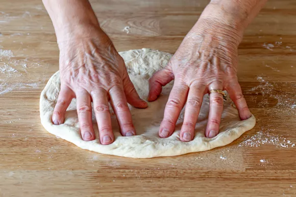
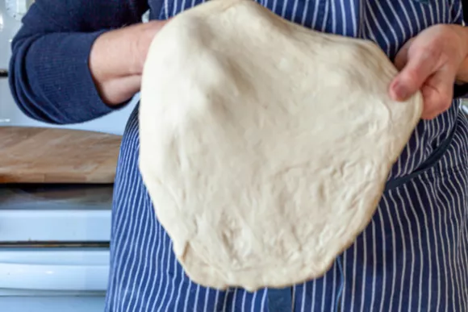
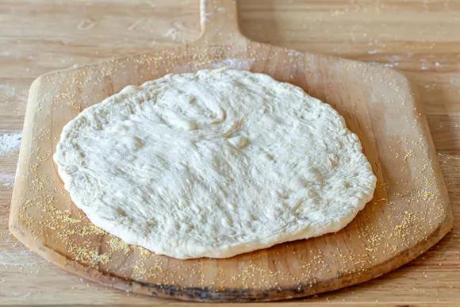
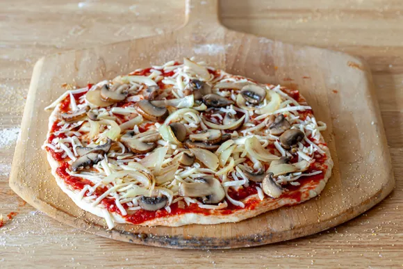
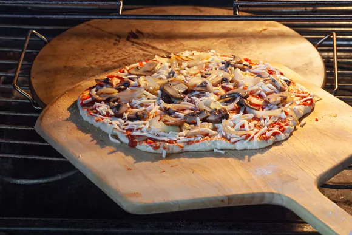

Place the warm water in the large bowl of a heavy duty stand mixer. Sprinkle the yeast over the warm water and let it sit for 5 minutes until the yeast is dissolved.
After 5 minutes stir if the yeast hasn't dissolved completely. The yeast should begin to foam or bloom, indicating that the yeast is still active and alive.
(Note that if you are using "instant yeast" instead of "active yeast", no proofing is required. Just add to the flour in the next step.)
Add the flour, salt, sugar, and olive oil, and using the mixing paddle attachment, mix on low speed for a minute. Then replace the mixing paddle with the dough hook attachment.
Knead the pizza dough on low to medium speed using the dough hook about 7-10 minutes.
If you don't have a mixer, you can mix the ingredients together and knead them by hand.
The dough should be a little sticky, or tacky to the touch. If it's too wet, sprinkle in a little more flour.
Spread a thin layer of olive oil over the inside of a large bowl. Place the pizza dough in the bowl and turn it around so that it gets coated with the oil.
At this point you can choose how long you want the dough to ferment and rise. A slow fermentation (24 hours in the fridge) will result in more complex flavors in the dough. A quick fermentation (1 1/2 hours in a warm place) will allow the dough to rise sufficiently to work with.
Cover the dough with plastic wrap.
For a quick rise, place the dough in a warm place (75°F to 85°F) for 1 1/2 hours.
For a medium rise, place the dough in a regular room temperature place (your kitchen counter will do fine) for 8 hours. For a longer rise, chill the dough in the refrigerator for 24 hours (no more than 48 hours).
The longer the rise (to a point) the better the flavor the crust will have.
 After the pizza dough has risen, you can freeze it to use later. Divide the dough in half (or the portion sizes you will be using to make your pizzas). Place on parchment paper or a lightly floured dish and place, uncovered, in the freezer for 15 to 20 minutes. Then remove from the freezer, and place in individual freezer bags, removing as much air as you can from the bags. Return to the freezer and store for up to 3 months.
Thaw the pizza dough in the refrigerator overnight or for 5 to 6 hours. Then let the dough sit at room temperature for 30 minutes before stretching it out in the next steps.
Place a pizza stone on a rack in the lower third of your oven. Preheat the oven to 475°F for at least 30 minutes, preferably an hour. If you don't have a pizza stone, you can use a pizza pan or a thick baking sheet; you need something that will not warp at high temperatures.
Remove the plastic cover from the dough. Dust your hands with flour and push the dough down so it deflates a bit. Divide the dough in half.
Form two round balls of dough. Place each in its own bowl, cover with plastic and let sit for 15 minutes (or up to 2 hours).
Prepare your desired toppings. Note that you are not going to want to load up each pizza with a lot of toppings as the crust will end up not crisp that way.
About a third a cup each of tomato sauce and cheese would be sufficient for one pizza. One to two mushrooms thinly sliced will cover a pizza.
Working one ball of dough at a time, take one ball of dough and flatten it with your hands on a lightly floured work surface.
Starting at the center and working outwards, use your fingertips to press the dough to 1/2-inch thick. Turn and stretch the dough until it will not stretch further.
Let the dough relax 5 minutes and then continue to stretch it until it reaches the desired diameter—10 to 12 inches.
Treat the dough gently!
You can also hold up the edges of the dough with your fingers, letting the dough hang and stretch, while working around the edges of the dough.
If a hole appears in your dough, place the dough on a floured surface and push the dough back together to seal the hole.
Use your palm to flatten the edge of the dough where it is thicker. Pinch the edges if you want to form a lip.
 Use your fingertips to press down and make dents along the surface of the dough to prevent bubbling. Brush the top of the dough with olive oil (to prevent it from getting soggy from the toppings). Let rest another 10 to 15 minutes.
Repeat with the second ball of dough.
Lightly sprinkle your pizza peel (or flat baking sheet) with cornmeal. (The corn meal will act as little ball bearings to help move the pizza from the pizza peel into the oven.)
Transfer one prepared flattened dough to the pizza peel.
If the dough has lost its shape in the transfer, lightly shape it to the desired dimensions.
Spoon on the tomato sauce, sprinkle with cheese, and place your desired toppings on the pizza. Be careful not to overload the pizza with too many toppings, or your pizza will be soggy.
Sprinkle some cornmeal on the baking stone in the oven (watch your hands, the oven is hot!). Gently shake the peel to see if the dough will easily slide, if not, gently lift up the edges of the pizza and add a bit more cornmeal.
Slide the pizza off of the peel and onto the baking stone in the oven.
Bake pizza in the 475°F oven, one at a time, until the crust is browned and the cheese is golden, about 10 to 15 minutes. If you want, toward the end of the cooking time you can sprinkle on a little more cheese. Enjoy!